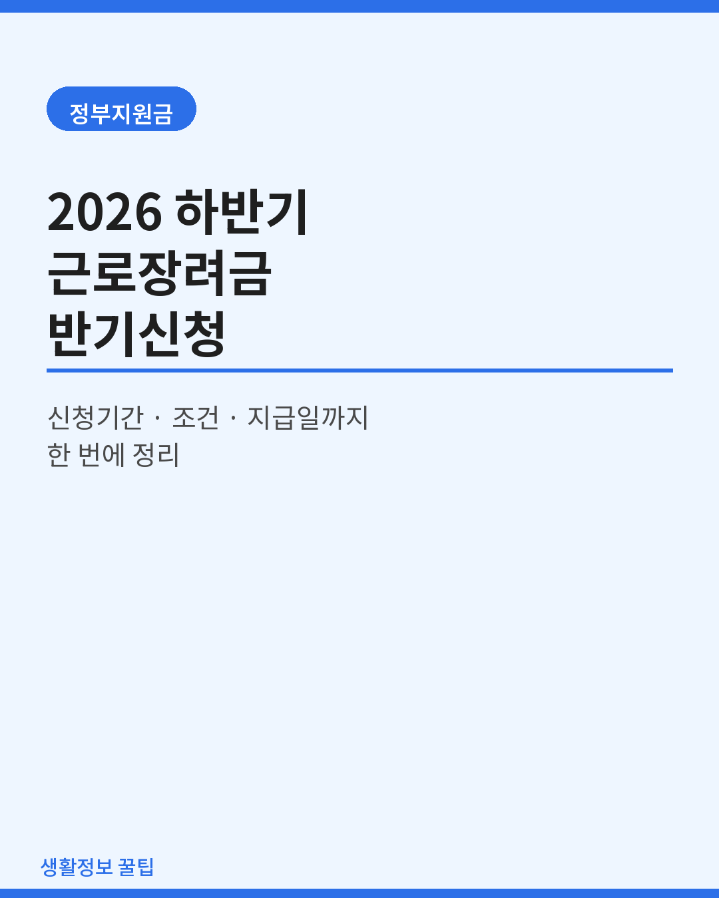
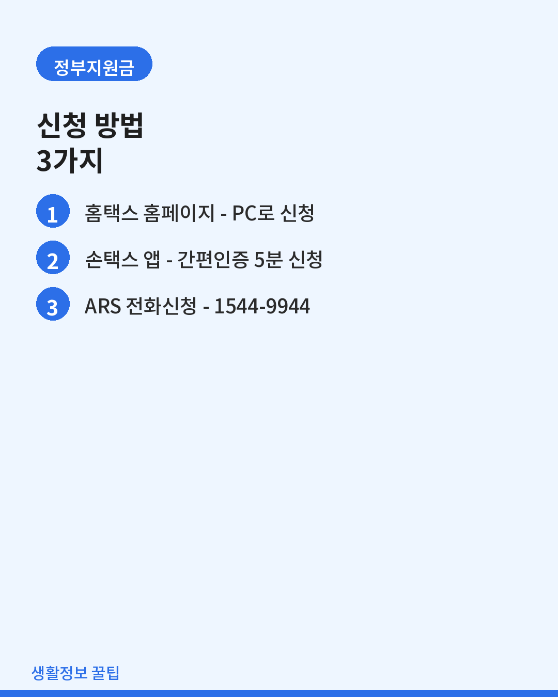
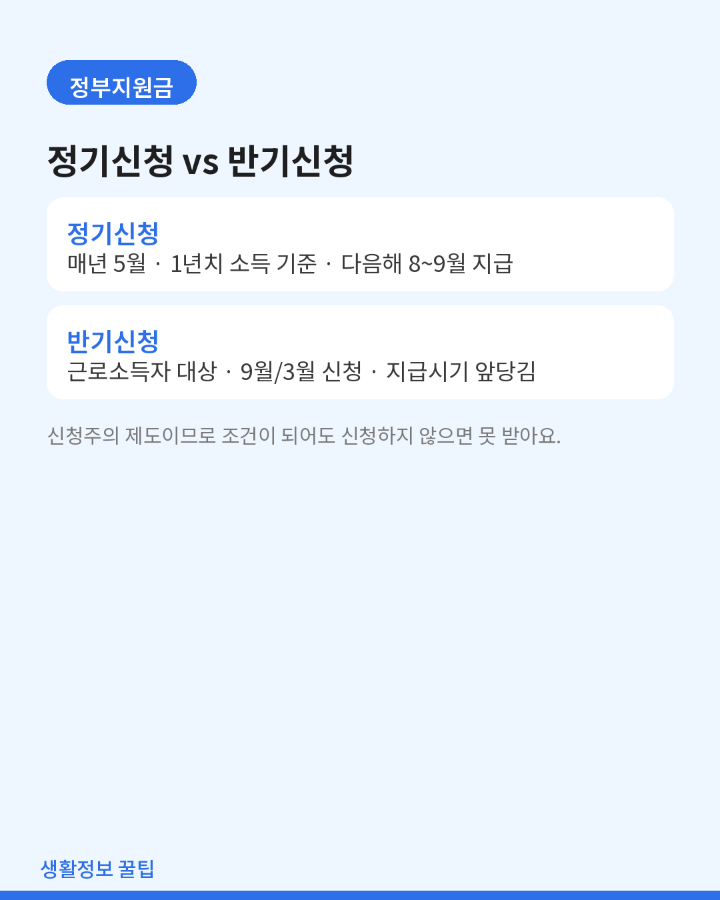
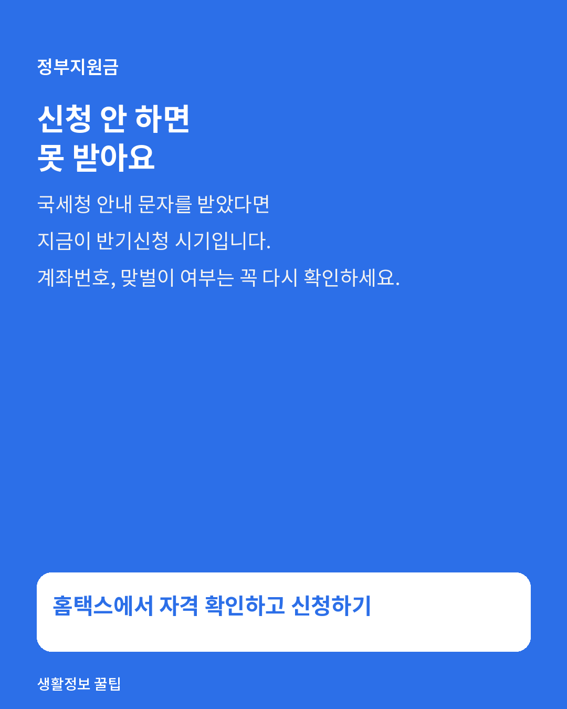

생활정보
2026년 하반기 근로장려금 반기신청, 나도 받을 수 있을까?
매년 놓치기 쉬운 반기신청의 시기와 조건, 신청 방법을 한 번에 정리했습니다.

근로장려금이란
일은 하지만 소득이 적은 가구에 국세청이 현금을 지원해주는 제도입니다. 소득세 신고 여부와 무관하게 신청해야만 심사를 거쳐 지급되는 신청주의 제도라는 점을 꼭 기억하세요. 신청하지 않으면 조건이 되어도 받지 못합니다.
정기신청과 반기신청의 차이
- 정기신청 — 매년 5월, 전년도 1년치 소득 기준으로 신청하고 다음 해 8~9월에 지급받습니다.
- 반기신청 — 근로소득만 있는 가구가 대상입니다. 상반기분은 9월, 하반기분은 다음 해 3월에 각각 신청합니다.
- 반기신청을 하면 지급 시기가 앞당겨지는 대신, 실제 지급액의 일부만 먼저 받고 나머지는 정기신청 정산 때 조정됩니다.
8~9월 시점에 특히 중요한 건 상반기분 반기신청입니다. 근로소득자라면 국세청 안내 문자를 받았는지 먼저 확인해보세요.
신청 대상
- 가구원 전체의 연간 총소득이 기준을 충족할 것 (단독·홑벌이·맞벌이 가구별로 기준이 다릅니다)
- 가구원 전체 재산 합계액이 기준 이하일 것
- 대한민국 국적 보유 (또는 배우자가 국적자인 외국인)
- 전문직 사업 등 제외 업종에 해당하지 않을 것
정확한 소득·재산 기준 금액은 매년 조정됩니다. 신청 직전에 반드시 홈택스 모의계산으로 본인 자격을 확인하세요.

신청 방법 세 가지
- 홈택스hometax.go.kr → 신청/제출 → 근로장려금·자녀장려금 신청
- 손택스스마트폰 앱에서 간편인증으로 5분이면 끝납니다
- ARS1544-9944 — 안내 문자를 받았다면 개별인증번호로 자동신청 가능

자주 하는 실수
- 계좌번호 오기입 — 지급 지연의 가장 흔한 원인입니다.
- 맞벌이 여부 잘못 표기 — 환수 대상이 될 수 있습니다.
- 재산 기준 초과를 모르고 신청 — 나중에 부정수급으로 환수될 수 있으니 미리 확인하세요.
지급일
신청 접수 후 국세청 심사를 거쳐 통상 신청 마감월로부터 약 4개월 이내에 지급됩니다. 정확한 일정은 홈택스 공지사항이 가장 정확합니다.

마무리
근로장려금은 몰라서 못 받는 대표적인 제도입니다. 주변에 프리랜서, 아르바이트, 일용직으로 일하는 분이 있다면 꼭 알려주세요. 신청 기간을 놓치면 다음 정기신청까지 기다려야 합니다.